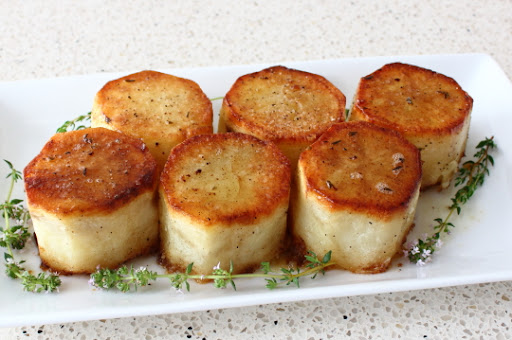

Fondant Potatoes

Tubular Tubers
These tubular tubers taste amazing and the texture this method provides is unlike anything you get by just roasting. The way the crusty, crunchy edges outside, works with the uniquely rich and creamy inside is truly a magical thing.
I just think that we are so used to the usual rotation of potato side dishes; fried, roasted, mashed, etc., that it’s hard to push ourselves to do a potato recipe that has multiple steps. In fairness, the multiple steps are super easy, but still. Anyway, if you’ve never experienced the old world awesomeness that is the fondant potato, I hope this video inspires you to try. Enjoy!
Ingredients
- 3 large, whole Russet potatoes
- 2 tablespoons coconut oil
- salt and black pepper to taste
- 3 tablespoons butter
- 4 sprigs thyme, plus more for garnish
- 1/2 cup chicken broth, or more as needed
Directions
- Preheat the oven to 425 degrees F (220 degrees C).
- Cut off ends of russet potatoes. Stand potatoes on end, and peel them from top to bottom with a sharp knife to make each potato into a uniform cylinder. Cut each cylinder in half crosswise to make 6 potato cylinders about 2 inches long.
- Place potatoes into a bowl of cold water for about 5 minutes to remove starch from the outsides.
- Heat coconut oil in a heavy oven-proof skillet over high heat until it shimmers slightly.
- Pat dry potatoes with paper towels. Place potato cylinders with the best-looking ends into the hot oil. Reduce heat to medium-high, and pan-fry potatoes until well-browned, 5 to 6 minutes. Season with salt and black pepper.
- Flip potatoes and repeat on the other ends. As they cook, use a paper towel held with tongs to carefully blot out the oil from the skillet. Add butter and thyme sprigs to the skillet.
- Pick up a thyme sprig with tongs and use it to paint butter over the top of the potatoes. Cook until butter foams and foam turns from white to a pale tan color. Season with more salt and pepper. Pour chicken stock into skillet.
- Transfer the skillet to the preheated oven and cook until potatoes are tender and creamy inside, about 30 minutes. If potatoes aren't tender, add 1/4 cup more stock and cook for 10 more minutes.
- Place potatoes on a serving platter. Spoon thyme-scented butter remaining in skillet over potatoes. Garnish with thyme sprigs. Let cool about 5 minutes before serving.